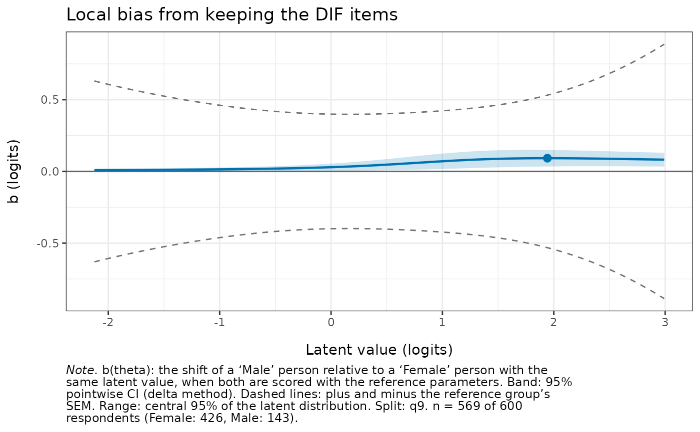

Practical impact of DIF on group comparisons and person scores
Source:R/dif_impact.R
RMdifImpact.RdEstimates how much uniform DIF in the given items biases a comparison of
two groups and the scores of persons, so that DIF flagged by
RMdifAnchor or RMdifTree can be judged by its
size. The items are given a focal-group shift in a split model, and the
estimates when the items are kept (scored with pooled parameters) are
compared with the split model's. Everything is reported on several
scales, without a threshold or a verdict.
Arguments
- data
A data.frame or matrix of item responses (non-negative integers, 0-based). One column per item, one row per person. Pass the grouping variable separately via
dif_var.- dif_var
Vector of length
nrow(data)(factor, character or numeric) with exactly two groups. Rows where it isNAare dropped with a message.- items
The items with DIF, by column name or position. At least one item must stay common to both groups.
- reference
The reference group, one of the two levels of
dif_var. DefaultNULL, the first level. The other group is the focal group, and differences are focal minus reference.- cut
Optional cut-off for the classification rates and the local bias at the cut. On the logit scale (
cut_scale = "theta") or a raw sum score (cut_scale = "sum", a whole number from 1 to the maximum score). A person is classified at or above the cut when their WLE (or raw score) is at or above it. DefaultNULL, no rates.- cut_scale
"theta"(default) or"sum".- target
Optional target population for a projection: a list with
n(group sizes, reference then focal) and optionallymeanandsd(the latent mean and SD of each group, on the scale described in Details; default the estimates from the data). Elements may also be named by the group labels. DefaultNULL, no projection.- conf
Confidence level of the intervals. Default
0.95.- table
With
output = "kable"or"dataframe", the table to return:"impact"(default, the group comparison),"dif"(the estimated shifts),"items"(the impact of each item, with two or more items),"local"(the local bias),"rates"(needscut) or"projection"(needstarget).- output
"kable"(default),"dataframe","ggplot"(the local bias curve) or"list"(all tables, see Value).
Value
A data.frame, a knitr_kable, a ggplot or a list,
depending on output. Nothing is attached as attributes.
With output = "list": a list with
impactone row per estimator (
Estimator: latent mean, WLE mean, sum score;Units) withDelta_keepandDelta_split(the group difference, focal minus reference, when the items are kept and when they are split),SE_Delta(the sampling SE ofDelta_splitin these data),Impact(Delta_keep - Delta_split, the bias in the group difference from keeping the items),SE,lowerandupper,Pct_of_Delta(100 * Impact / abs(Delta_split)),SMD(Impactdivided by the estimator's SD under split, the square root of the average of the two group variances) andImpact_in_SE(Impact / SE_Delta).difone row per item in
itemswithItem,DIF(the focal shift in logits, positive when the item is harder for the focal group),SE,lowerandupper.itemswith two or more items, the impact of each: one row per item and estimator with
Item,Estimator,Units,Impact(the change in the group difference when this item is kept and the others stay split),SE,lowerandupper.NULLwith one item.localthe local bias: one row per summary with
Quantity,Estimate,SE,lower,upperandTheta(where it occurs). The rows are the local bias where its absolute value is largest, in logits and in SEM units, and, with acut, the local bias at the cut in logits and in SEM units. All four are signed.rateswith a
cut: one row per population ("sample", and"target"with atarget), group, strategy ("keep","split","keep - split") and rate, withEstimate,SE,lowerandupper. The rates are shares of the group:"at or above"(classified at or above the cut),"false negative"(latent value at or above the cut, classified below) and"false positive".NULLwithout a cut.rulewith a
cut: the classification rule, one row per group and strategy withLowest_raw_score(the lowest raw score classified at or above the cut; the maximum score plus 1 when none is) and, for a cut on the logit scale,WLE(that score's WLE).projectionwith a
target: one row per estimator withImpact,SE,lower,upper,SE_Delta(the SE of the group difference in a study of the target's size) andImpact_in_SE.curvethe local bias over the central 95% of the latent distribution:
Theta,b,SE,lower,upperandSEM(the reference group's standard error of measurement atTheta).settingsa one-row data.frame with
Reference,Focal,Comparison,Items_split,Common_items,Cut,Cut_scale,Conf, the latent means and SDs (Mean_ref,SD_ref,Mean_focal,SD_focal),Range_loandRange_hi(the central 95% of the latent distribution),Theta_to_pooled(see Details), the target (Target_n_ref,Target_n_focal,Target_mean_ref,Target_sd_ref,Target_mean_focal,Target_sd_focal,NAwithout one),Items,N(respondents used),N_excluded(rows dropped for a missingdif_var, no responses or incomplete responses),N_incomplete(of these, rows dropped for incomplete responses) and onen_<group>column per group.
Details
Models. Under keep, everyone is scored with one set of
item parameters, a CML partial credit (or Rasch) fit to both groups.
Under split, each item in items has its thresholds shifted
by the same amount in the focal group (uniform DIF), the other items are
common to both groups and link them, and the model is fitted by CML.
Three estimators of the group difference are compared: the latent mean
(normal latent distribution per group, fitted by marginal ML with the
item parameters fixed), the mean WLE (Warm, 1989), and the raw sum score
(under split, the focal group's sum score is equated to the reference
group's items by true-score equating). Removing the items gives about
the same group difference as splitting them, so it is not reported.
Size of the impact. A DIF test that is significant says that DIF exists, not that it matters (Meade, 2010). The impact is the bias in the group difference from keeping the items, reported in the estimator's own units, as a percentage of the group difference, as a standardised mean difference (the SD is the square root of the average of the two group variances, so it does not depend on the ratio of the group sizes), and in units of the SE of the group difference in these data. The last one grows with the sample size for the same DIF: it shows whether a confidence interval for the group difference can be trusted, not whether the DIF matters. When the items were flagged in the same data, an impact interval that excludes zero adds nothing to the DIF test. Its size is what to judge.
Local bias. For a person at latent value \(\theta\), the local bias \(b(\theta)\) is how far a focal person lands from a reference person with the same \(\theta\) when both are scored with the reference group's parameters (the horizontal distance between the two test characteristic curves). It is negative when the DIF makes the items harder for the focal group. It is reported where its absolute value is largest over the central 95% of the latent distribution of both groups together, with its sign, in logits and in units of the reference group's standard error of measurement (SEM). With DIF items in opposite directions the group-mean bias can cancel while persons in parts of the scale are still shifted.
Rates at a cut. With a cut, persons are classified by
their WLE (or raw score). Under split, the focal group's WLE comes from
its own item parameters, and its raw score is equated. The rule (which
raw scores are classified at or above the cut, per group and strategy)
is taken from the fit and held fixed (an equated focal score counts as
at or above a sum-score cut when it is at or above cut - 0.5), and its rates are computed from
the split model and each group's estimated latent distribution. The
rates therefore describe the rule these data give, which can differ
from the rule of the population by one raw score, and the rule is
reported with them. The difference keep - split is zero whenever the
two strategies classify the same raw scores. On the sum-score scale,
the true status is a latent value at or above the point where the
reference group's expected score is cut - 0.5.
Projection. A study that uses the scale in another population,
or with other group sizes, gets the same item parameters and DIF but a
different bias in the group difference, a different SE, and different
rates. With target, these are computed for the target
population from the estimated split model (population CML for the keep
parameters). Their uncertainty comes from the present data and does
not shrink with the target size. For the rates it includes the
uncertainty of the estimated latent means and SDs when target
leaves them at their defaults. The rates in the target population are
those of the rule fitted to these data, as when a scoring table from one
study is used in another population, while the projected impact refits
the pooled model in the target population. With a sum-score cut the keep
rule is the cut itself, so only a theta cut is affected. The
projection assumes that the item parameters and the DIF are the same in
the target population.
Scale. Latent values (cut, the latent means and SDs, the
range and location of the local bias, target means) are on the
logit scale of the split model with the reference group's thresholds
centred to mean zero. RMpersonParameters and
RMitemParameters centre all thresholds of the pooled
model instead. Linked through the common items, a value on this
function's scale plus Theta_to_pooled (in the settings) is the
same latent value on that scale.
Intervals. The impact, the local bias and the projected impact
have delta-method intervals on the estimated shifts. The impact of each
item has the SE \(|\mathrm{impact}_j / \mathrm{DIF}_j| \times
SE(\mathrm{DIF}_j)\). The per-item impacts need not add up to the joint
impact (in the simulations their sum was somewhat larger). The rates have delta-method intervals on all
parameters of the split model and the latent means and SDs. In
simulations with 5 and 10 four-category items, one or two DIF items of
0.5 or 0.8 logits and 250 to 800 persons per group, these intervals
covered close to 95% when the true DIF items were split (most cells
.92 to .97). The interval for keep - split rates was the least
accurate, down to .84 in a few cells with a theta cut when the two
rules differed. The results hold for the items given: an item with DIF
that is not in items biases every estimate, and with few items a
falsely flagged item can cancel part of a real impact. The studies are
reported in full at
https://pgmj.github.io/rasch_book/chapters/dif-impact.html.
Data. Respondents with missing responses are dropped (with a message), since the latent means are fitted to the raw-score distribution. Every category an item uses must be used in the data, but not in both groups: the shift model shares an item's thresholds across groups.
References
Meade, A. W. (2010). A taxonomy of effect size measures for the differential functioning of items and scales. Journal of Applied Psychology, 95(4), 728-743. doi:10.1037/a0018966
Warm, T. A. (1989). Weighted likelihood estimation of ability in item response theory. Psychometrika, 54(3), 427-450. doi:10.1007/BF02294627
See also
RMdifAnchor to find the items with DIF,
RMdifLR and RMdifTree.
Examples
# \donttest{
data(phq9)
items <- phq9[, 1:9]
# q9 is the item RMdifAnchor() flags for gender. Impact of keeping it on
# the comparison of men and women (rows with missing gender are dropped)
RMdifImpact(items, dif_var = phq9$gender, items = "q9")
#> 31 row(s) with NA in `dif_var` dropped.
#>
#>
#> Table: Impact of keeping the DIF items on the group difference ('Male' minus 'Female'). Impact = Delta_keep - Delta_split, 95% CI by the delta method. Pct_of_Delta: impact as a percentage of |Delta_split|. SMD: impact / SD (square root of the average of the two group variances). Impact_in_SE: impact / SE of Delta_split in these data. No threshold is implied. Split: q9 (8 common items). n = 569 of 600 respondents (Female: 426, Male: 143).
#>
#> |Estimator |Units | Delta_keep| Delta_split| SE_Delta| Impact| SE| lower| upper| Pct_of_Delta| SMD| Impact_in_SE|
#> |:-----------|:----------|----------:|-----------:|--------:|------:|-----:|-----:|-----:|------------:|-----:|------------:|
#> |Latent mean |logits | 0.086| 0.037| 0.139| 0.049| 0.018| 0.014| 0.085| 134.4| 0.037| 0.36|
#> |WLE mean |logits | 0.107| 0.059| 0.139| 0.047| 0.017| 0.014| 0.081| 80.4| 0.033| 0.34|
#> |Sum score |raw points | 0.240| 0.033| 0.663| 0.206| 0.079| 0.052| 0.361| 618.2| 0.030| 0.31|
# Local bias, and rates at a sum score of 10
RMdifImpact(items, dif_var = phq9$gender, items = "q9", table = "local")
#> 31 row(s) with NA in `dif_var` dropped.
#>
#>
#> Table: Local bias b(theta): the shift of a focal person relative to a reference person with the same latent value, when both are scored with the reference parameters. Signed values where the absolute value is largest over the central 95% of the latent distribution (theta -2.13 to 2.99), 95% CI. SEM: the reference group's standard error of measurement. Split: q9 (8 common items). n = 569 of 600 respondents (Female: 426, Male: 143).
#>
#> |Quantity | Estimate| SE| lower| upper| Theta|
#> |:-------------------------------------------|--------:|-----:|-----:|-----:|-----:|
#> |b where absolute b is largest (logits) | 0.092| 0.029| 0.035| 0.150| 1.94|
#> |b / SEM where its absolute value is largest | 0.190| 0.066| 0.061| 0.319| 1.49|
RMdifImpact(items, dif_var = phq9$gender, items = "q9", cut = 10,
cut_scale = "sum", table = "rates")
#> 31 row(s) with NA in `dif_var` dropped.
#>
#>
#> Table: Classification at a raw score of 10, as shares of each group, for the rule these data give (lowest raw score classified at or above the cut, per group and strategy, in the list output). 95% CI by the delta method. Split: q9 (8 common items). n = 569 of 600 respondents (Female: 426, Male: 143).
#>
#> |Population |Group |Strategy |Rate | Estimate| SE| lower| upper|
#> |:----------|:------|:------------|:--------------|--------:|-----:|-----:|-----:|
#> |sample |Female |keep |at or above | 0.770| 0.017| 0.736| 0.803|
#> |sample |Female |keep |false negative | 0.044| 0.002| 0.040| 0.048|
#> |sample |Female |keep |false positive | 0.032| 0.002| 0.029| 0.035|
#> |sample |Female |split |at or above | 0.770| 0.017| 0.736| 0.803|
#> |sample |Female |split |false negative | 0.044| 0.002| 0.040| 0.048|
#> |sample |Female |split |false positive | 0.032| 0.002| 0.029| 0.035|
#> |sample |Female |keep - split |at or above | 0.000| 0.000| 0.000| 0.000|
#> |sample |Female |keep - split |false negative | 0.000| 0.000| 0.000| 0.000|
#> |sample |Female |keep - split |false positive | 0.000| 0.000| 0.000| 0.000|
#> |sample |Male |keep |at or above | 0.768| 0.030| 0.711| 0.826|
#> |sample |Male |keep |false negative | 0.039| 0.003| 0.033| 0.045|
#> |sample |Male |keep |false positive | 0.032| 0.003| 0.027| 0.038|
#> |sample |Male |split |at or above | 0.768| 0.030| 0.711| 0.826|
#> |sample |Male |split |false negative | 0.039| 0.003| 0.033| 0.045|
#> |sample |Male |split |false positive | 0.032| 0.003| 0.027| 0.038|
#> |sample |Male |keep - split |at or above | 0.000| 0.000| 0.000| 0.000|
#> |sample |Male |keep - split |false negative | 0.000| 0.000| 0.000| 0.000|
#> |sample |Male |keep - split |false positive | 0.000| 0.000| 0.000| 0.000|
# Two items, with the impact of each
RMdifImpact(items, dif_var = phq9$gender, items = c("q2", "q9"),
table = "items")
#> 31 row(s) with NA in `dif_var` dropped.
#>
#>
#> Table: Impact of each item: change in the group difference ('Male' minus 'Female') when this item is kept and the other DIF items stay split, 95% CI. Split: q2, q9 (7 common items). n = 569 of 600 respondents (Female: 426, Male: 143).
#>
#> |Item |Estimator |Units | Impact| SE| lower| upper|
#> |:----|:-----------|:----------|------:|-----:|-----:|-----:|
#> |q2 |Latent mean |logits | 0.061| 0.017| 0.027| 0.095|
#> |q2 |WLE mean |logits | 0.061| 0.017| 0.027| 0.095|
#> |q2 |Sum score |raw points | 0.290| 0.082| 0.130| 0.450|
#> |q9 |Latent mean |logits | 0.063| 0.020| 0.024| 0.102|
#> |q9 |WLE mean |logits | 0.060| 0.019| 0.023| 0.098|
#> |q9 |Sum score |raw points | 0.265| 0.083| 0.102| 0.429|
# Projection to a survey of 2 000 women and 2 000 men
RMdifImpact(items, dif_var = phq9$gender, items = "q9",
target = list(n = c(2000, 2000)), table = "projection")
#> 31 row(s) with NA in `dif_var` dropped.
#>
#>
#> Table: Projected impact on the group difference ('Male' minus 'Female') in a target population of n = 2000 ('Female', latent mean 0.42, SD 1.28) and 2000 ('Male', latent mean 0.46, SD 1.37). SE_Delta: SE of the group difference at that size. 95% CI from the present data. Split: q9 (8 common items). n = 569 of 600 respondents (Female: 426, Male: 143).
#>
#> |Estimator |Units | Impact| SE| lower| upper| SE_Delta| Impact_in_SE|
#> |:-----------|:----------|------:|-----:|-----:|-----:|--------:|------------:|
#> |Latent mean |logits | 0.049| 0.018| 0.014| 0.084| 0.045| 1.10|
#> |WLE mean |logits | 0.048| 0.017| 0.014| 0.082| 0.044| 1.10|
#> |Sum score |raw points | 0.211| 0.079| 0.055| 0.366| 0.218| 0.97|
# Local bias curve
if (requireNamespace("ggplot2", quietly = TRUE)) {
RMdifImpact(items, dif_var = phq9$gender, items = "q9",
output = "ggplot")
}
#> 31 row(s) with NA in `dif_var` dropped.

# }